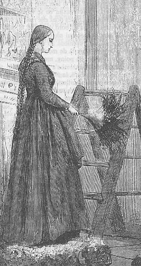
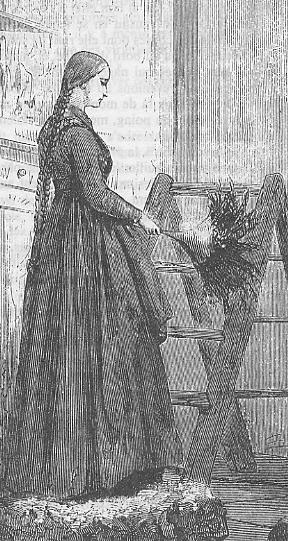

Le code du Voyage au centre de la terre
Le professeur Lidenbrock, éminent géologue, a acheté un livre d'un fameux auteur islandais du XII è s. En le montrant à son neveu Axel, les deux hommes découvrent un parchemin sur lequel sont dessinés des signes en runiques, des caractères islandais. Ils tentent de déchiffrer ce mystérieux parchemin :
"C'est évidemment du runique, disait le professeur en fronçant le sourcil. Mais il y a un secret, et je le découvrirai, sinon..."
Un geste violent acheva sa pensée.
"Mets-toi là, ajouta-t-il en m'indiquant la table du poing, et écris."
En un instant, je fus prêt.
"Maintenant, je vais te dicter chaque lettre de notre alphabet qui correspond à l'un de ces caractères islandais. Nous verrons ce que cela donnera. Mais, par Saint-Michel! garde-toi bien de te tromper!"
La dictée commença. Je m'appliquai de mon mieux. Chaque lettre fut appelée l'une après l'autre, et forma l'incompréhensible succession des mots suivants :
Quand ce travail fut terminé, mon oncle prit vivement la feuille sur laquelle je venais d'écrire, et il l'examina longtemps avec attention.
"Qu'est-ce que cela veut dire?" répétait-il machinalement.
Sur l'honneur, je n'aurais pu le lui apprendre. D'ailleurs, il ne m'interrogea pas, et il continua de se parler à lui-même :
"C'est ce que nous appelons un cryptogramme, disait-il, dans lequel le sens est caché sous des lettres brouillées à dessein, et qui convenablement disposées formeraient une phrase intelligible. Quand je pense qu'il y a là peut-être l'explication ou l'indication d'une grande découverte!"
Pour mon compte, je pensais qu'il n'y avait absolument rien, mais je gardai prudemment mon opinion.
Le professeur prit alors le livre et le parchemin, et les compara tous les deux.
"Ces deux écritures ne sont pas de la même main, dit-il; le cryptogramme est postérieur au livre, et j'en vois une preuve irréfragable. En effet, la première lettre est une double M qu'on chercherait vainement dans le livre de Turleson, car elle ne fut ajoutée à l'alphabet islandais qu'au XIVè siècle. Ainsi donc, il y a au moins deux cents ans entre le manuscrit et le document."
Cela, j'en conviens, me parut assez logique.
"Je suis donc conduit à penser, reprit mon oncle, que l'un des possesseurs de ce livre aura tracé ces caractères mystérieux. Mais qui diable était ce possesseur? N'aurait-il point mis son nom en quelque endroit en ce manuscrit?"
Mon oncle releva ses lunettes, prit une forte loupe, et passa soigneusement en revue les premières pages du livre. Au verso de la seconde, celle du faux titre, il découvrit une sorte de macule qui faisait à l'oeil l'effet d'une tâche d'encre. Cependant, en y regardant de près, on distinguait quelques caractères à demi effacés. Mon oncle comprit que là était le point intéressant; il s'acharna donc sur la macule, et, sa grosse loupe aidant, il finit par reconnaître les signes que voici, caractères runique qu'il lut sans hésiter :
Je regardai mon oncle avec une certaine admiration.
"Ces alchimistes, reprit-il, Avicenne, Bacon, Lulle, Paracelse, étaient les véritables, les seuls savants de leur époque. Ils ont fait des découvertes dont nous avons le droit d'être étonnés. Pourquoi ce Saknussemm n'aurait-il pas enfoui sous cet incompréhensible cryptogramme quelque surprenante invention? Cela doit être ainsi. Cela est."
L'imagination du professeur s'enflammait à cette hypothèse.
"Sans doute, osai-je répondre, mais quel intérêt pouvait avoir ce savant à cacher ainsi quelque merveilleuse découverte?
-Pourquoi? pourquoi? Eh! le sais-je? Galilée n'en a-t-il pas agi ainsi pour Saturne? D'ailleurs, nous verrons bien : j'aurai le secret de ce document, et je ne prendrai ni nourriture, ni sommeil avant de l'avoir deviné."
"Oh!" pensai-je.
"Ni toi non plus, Axel", reprit-il.
"Diable, me dis-je, il est heureux que j'aie diné pour deux!"
"Et d'abord, fit mon oncle, il faut trouver la langue de ce chiffre. Cela ne doit pas être difficile."
A ces mots, je relevai vivement la tête. Mon oncle reprit son soliloque :
"Rien n'est plus aisé. Il y a dans ce document cent trente-deux lettres qui donnent soixante-dix-neuf consonnes contre cinquante-trois voyelles. Or, c'est-à-peu près suivant cette proportion que sont formées les mots des langues méridionales, tandis que les idiomes du nord sont infiniment plus riches en consonnes. Il s'agit donc d'une langue du midi."
Ces conclusions étaient fort justes.
"Mais quelle est cette langue?"
C'est là que j'attendais mon savant, chez lequel cependant je découvrais un profond analyste.
"Ce Saknusemm, reprit-il, était un homme instruit; or, dès qu'il n'écrivait pas dans sa langue maternelle, il devait choisir de préférence la langue courante entre les esprits cultivés du XVIè s., je veus dire le latin. Si je me trompe, je pourrai essayer de l'espagnol, du français, de l'italien, du grec et de l'hébreu. Mais les savants du XVIè s. écrivaient généralement en latin. J'ai donc le droit de dire a priori : ceci est du latin."
Je sautai contre ma chaise. Mes souvenirs de latiniste se révoltaient contre la prétention que cette suite de mots baroques pût appartenir à la douce langue de Virgile.
"Oui, du latin, reprit mon oncle, mais du latin brouillé."
"A la bonne heure! pensai-je. Si tu le débrouilles, tu seras fin, mon oncle."
"Examinons bien, dit-il, en reprenant la feuille sur laquelle j'avais écrit. Voici une série de cent trente-deux lettres qui se présentent sous un désordre apparent. Il y a des mots où les consonnes se rencontrent seules comme le premier "m.rnlls", d'autres où les voyelles, au contraire, abondent, le cinquième par exemple "unteief", ou l'avant-dernier "oseibo". Or, cette disposition n'a évidemment pas été combinée : elle est donnée mathématiquement par la raison inconnue qui a présidé à la succession de ces lettres. Il me parait certain que la phrase primitive a été écrite régulièrement, puis retournée suivant une loi qu'il faut découvrir. Celui qui possèderait la clef de ce "chiffre" la lirait couramment. Mais quelle est cette clef? Axel, as-tu cette clef?"
A cette question, je ne répondis rien, et pour cause. Mes regards s'étaient arrêtés sur un charmant portrait suspendu au mur, le portrait de Graüben. La pupille de mon oncle se trouvait alors à Altona, chez une de ses parentes, et son abscence me rendait fort triste, car, je puis l'avouer maintenant, la jolie Virlandaise et le neveu du professeur s'aimaient avec toute la patience et la tranquilité allemandes. Nous nous étions fiancés à l'insu de mon oncle, trop géologue pour comprendre de pareils sentiments. Graüben était une charmante jeune fille blonde aux yeux bleus, d'un caractère un peu grave, d'un esprit un peu sérieux : mais elle ne m'en aimait pas moins. Pour mon compte, je l'adorais, si toutefois ce verbe existe dans la langue tudesque! L'image de ma petite Virlandaise me rejeta donc, en un instant, du monde des réalités dans celui des chimères, dans celui des souvenirs.
[...]
Or, j'en étais là de mon rêve, quand mon oncle, frappant la table du poing, me ramena violemment à la réalité.
"Voyons, dit-il, la première idée qui doit se présenter à l'esprit pour brouiller les lettres d'une phrase, c'est, il me semble, d'écrire les mots verticalement au lieu de les tracer horizontalement."
"Tiens!", pensai-je.
"Il faut voir ce que cela produit. Axel, jette une phrase quelconque sur ce bout de papier; mais, au lieu de disposer les lettres à la suite les unes des autres, mets-les successivement par colonnes verticales, de manière à les grouper en nombre de cinq ou six."
Je compris ce dont il s'agissait, et immédiatement j'écrivis de haut en bas :
"Bon, dis le professeur sans avoir lu. Maintenant, dispose ces mots sur une ligne horizontale."
J'obéis, et j'obtins la phrase suivante :
JmneGe ee,trn t'bmia! aiatü iepeb
"Parfait! fit mon oncle en m'arrachant le papier des mains, voilà qui a déjà le physionomie du vieux document : les voyelles sont groupées ainsi que les consonnes dans le même désordre; il y a même des majuscules au milieu des mots, tout comme sur le parchemin de Saknussemm!"
Je ne pus m'empêcher de trouver ces remarques fort ingénieuses.
"Or, reprit mon oncle en s'adressant indirectement à moi, pour lire la phrase que tu viens d'écrire, et que je connais pas, il me suffira de prendre successivement la première lettre de chaque mot, puis la seconde, puis la troisième, et ainsi de suite."
Et mon oncle, à son grand étonnement, et surtout au mien, lut :Je t'aime bien, ma petite Graüben
"Hein!" fit le professeur.
Oui, sans m'en douter, en amoureux maladroit, j'avais tracé cette phrase compromettante!
"Ah! Tu aimes Graüben? reprit mon oncle d'un véritable ton tuteur.
-Oui... Non... balbutiai-je.
-Ah! tu aimes Graüben! reprit-il machinalement. Eh bien, appliquons mon procédé au document en question!"
Mon oncle, retombé dans son absorbante contemplation, oubliait déjà mes imprudentes paroles. Je dis imprudentes, car la tête du savant ne pouvait pas comprendre les choses du coeur. Mais, heureusement, la grande affaire du document l'emporta.
Au moment de faire son expérience capitale, les yeux du professeur Lidenbrock lancèrent des éclairs à travers ses lunettes. Ses doigts tremblèrent, lorsqu'il reprit le vieux parchemin. Il était sérieusement ému. Enfin, il toussa fortement, et d'une voix grave, appelant successivement la première lettre, puis la seconde de chaque mot, il me dicta la série suivante :
Mais, qui aurait pu le prévoir! un violent coup de poing ébranla la table. L'encre rejaillit, la plume me sauta des mains.
"Ce n'est pas cela! s'écria mon oncle, cela n'a pas de sens commun!"
Puis, traversant le cabinet comme un boulet, descendant l'escalier comme une avalanche, il se présenta dans Königstrasse, et s'enfuit à toutes jambes.
Le professeur a disparu, pour rechercher la clé du message. Pendant son abscence, presque par hasard, son neveu l'a découverte. Nous retrouvons les deux personnages quand le neveu explique la solution à son oncle.Un geste violent acheva sa pensée.
"Mets-toi là, ajouta-t-il en m'indiquant la table du poing, et écris."
En un instant, je fus prêt.
"Maintenant, je vais te dicter chaque lettre de notre alphabet qui correspond à l'un de ces caractères islandais. Nous verrons ce que cela donnera. Mais, par Saint-Michel! garde-toi bien de te tromper!"
La dictée commença. Je m'appliquai de mon mieux. Chaque lettre fut appelée l'une après l'autre, et forma l'incompréhensible succession des mots suivants :
| m.rnlls | esreuel | seecJede |
| sgtssmf | unteief | niedrke |
| kt,samn | atrateS | Saodrrn |
| emtnael | nuaect | rrilSa |
| Atvaar | .nscrc | ieaabs |
| ccdrmi | eeutul | frantu |
| dt,iac | oseibo | KediiY |
"Qu'est-ce que cela veut dire?" répétait-il machinalement.
Sur l'honneur, je n'aurais pu le lui apprendre. D'ailleurs, il ne m'interrogea pas, et il continua de se parler à lui-même :
"C'est ce que nous appelons un cryptogramme, disait-il, dans lequel le sens est caché sous des lettres brouillées à dessein, et qui convenablement disposées formeraient une phrase intelligible. Quand je pense qu'il y a là peut-être l'explication ou l'indication d'une grande découverte!"
Pour mon compte, je pensais qu'il n'y avait absolument rien, mais je gardai prudemment mon opinion.
Le professeur prit alors le livre et le parchemin, et les compara tous les deux.
"Ces deux écritures ne sont pas de la même main, dit-il; le cryptogramme est postérieur au livre, et j'en vois une preuve irréfragable. En effet, la première lettre est une double M qu'on chercherait vainement dans le livre de Turleson, car elle ne fut ajoutée à l'alphabet islandais qu'au XIVè siècle. Ainsi donc, il y a au moins deux cents ans entre le manuscrit et le document."
Cela, j'en conviens, me parut assez logique.
"Je suis donc conduit à penser, reprit mon oncle, que l'un des possesseurs de ce livre aura tracé ces caractères mystérieux. Mais qui diable était ce possesseur? N'aurait-il point mis son nom en quelque endroit en ce manuscrit?"
Mon oncle releva ses lunettes, prit une forte loupe, et passa soigneusement en revue les premières pages du livre. Au verso de la seconde, celle du faux titre, il découvrit une sorte de macule qui faisait à l'oeil l'effet d'une tâche d'encre. Cependant, en y regardant de près, on distinguait quelques caractères à demi effacés. Mon oncle comprit que là était le point intéressant; il s'acharna donc sur la macule, et, sa grosse loupe aidant, il finit par reconnaître les signes que voici, caractères runique qu'il lut sans hésiter :
Je regardai mon oncle avec une certaine admiration.
"Ces alchimistes, reprit-il, Avicenne, Bacon, Lulle, Paracelse, étaient les véritables, les seuls savants de leur époque. Ils ont fait des découvertes dont nous avons le droit d'être étonnés. Pourquoi ce Saknussemm n'aurait-il pas enfoui sous cet incompréhensible cryptogramme quelque surprenante invention? Cela doit être ainsi. Cela est."
L'imagination du professeur s'enflammait à cette hypothèse.
"Sans doute, osai-je répondre, mais quel intérêt pouvait avoir ce savant à cacher ainsi quelque merveilleuse découverte?
-Pourquoi? pourquoi? Eh! le sais-je? Galilée n'en a-t-il pas agi ainsi pour Saturne? D'ailleurs, nous verrons bien : j'aurai le secret de ce document, et je ne prendrai ni nourriture, ni sommeil avant de l'avoir deviné."
"Oh!" pensai-je.
"Ni toi non plus, Axel", reprit-il.
"Diable, me dis-je, il est heureux que j'aie diné pour deux!"
"Et d'abord, fit mon oncle, il faut trouver la langue de ce chiffre. Cela ne doit pas être difficile."
A ces mots, je relevai vivement la tête. Mon oncle reprit son soliloque :
"Rien n'est plus aisé. Il y a dans ce document cent trente-deux lettres qui donnent soixante-dix-neuf consonnes contre cinquante-trois voyelles. Or, c'est-à-peu près suivant cette proportion que sont formées les mots des langues méridionales, tandis que les idiomes du nord sont infiniment plus riches en consonnes. Il s'agit donc d'une langue du midi."
Ces conclusions étaient fort justes.
"Mais quelle est cette langue?"
C'est là que j'attendais mon savant, chez lequel cependant je découvrais un profond analyste.
"Ce Saknusemm, reprit-il, était un homme instruit; or, dès qu'il n'écrivait pas dans sa langue maternelle, il devait choisir de préférence la langue courante entre les esprits cultivés du XVIè s., je veus dire le latin. Si je me trompe, je pourrai essayer de l'espagnol, du français, de l'italien, du grec et de l'hébreu. Mais les savants du XVIè s. écrivaient généralement en latin. J'ai donc le droit de dire a priori : ceci est du latin."
Je sautai contre ma chaise. Mes souvenirs de latiniste se révoltaient contre la prétention que cette suite de mots baroques pût appartenir à la douce langue de Virgile.
"Oui, du latin, reprit mon oncle, mais du latin brouillé."
"A la bonne heure! pensai-je. Si tu le débrouilles, tu seras fin, mon oncle."
"Examinons bien, dit-il, en reprenant la feuille sur laquelle j'avais écrit. Voici une série de cent trente-deux lettres qui se présentent sous un désordre apparent. Il y a des mots où les consonnes se rencontrent seules comme le premier "m.rnlls", d'autres où les voyelles, au contraire, abondent, le cinquième par exemple "unteief", ou l'avant-dernier "oseibo". Or, cette disposition n'a évidemment pas été combinée : elle est donnée mathématiquement par la raison inconnue qui a présidé à la succession de ces lettres. Il me parait certain que la phrase primitive a été écrite régulièrement, puis retournée suivant une loi qu'il faut découvrir. Celui qui possèderait la clef de ce "chiffre" la lirait couramment. Mais quelle est cette clef? Axel, as-tu cette clef?"
A cette question, je ne répondis rien, et pour cause. Mes regards s'étaient arrêtés sur un charmant portrait suspendu au mur, le portrait de Graüben. La pupille de mon oncle se trouvait alors à Altona, chez une de ses parentes, et son abscence me rendait fort triste, car, je puis l'avouer maintenant, la jolie Virlandaise et le neveu du professeur s'aimaient avec toute la patience et la tranquilité allemandes. Nous nous étions fiancés à l'insu de mon oncle, trop géologue pour comprendre de pareils sentiments. Graüben était une charmante jeune fille blonde aux yeux bleus, d'un caractère un peu grave, d'un esprit un peu sérieux : mais elle ne m'en aimait pas moins. Pour mon compte, je l'adorais, si toutefois ce verbe existe dans la langue tudesque! L'image de ma petite Virlandaise me rejeta donc, en un instant, du monde des réalités dans celui des chimères, dans celui des souvenirs.
[...]
Or, j'en étais là de mon rêve, quand mon oncle, frappant la table du poing, me ramena violemment à la réalité.
"Voyons, dit-il, la première idée qui doit se présenter à l'esprit pour brouiller les lettres d'une phrase, c'est, il me semble, d'écrire les mots verticalement au lieu de les tracer horizontalement."
"Tiens!", pensai-je.
"Il faut voir ce que cela produit. Axel, jette une phrase quelconque sur ce bout de papier; mais, au lieu de disposer les lettres à la suite les unes des autres, mets-les successivement par colonnes verticales, de manière à les grouper en nombre de cinq ou six."
Je compris ce dont il s'agissait, et immédiatement j'écrivis de haut en bas :
| J | m | n | e | G | e |
| e | e | , | t | r | n |
| t' | b | m | i | a | ! |
| a | i | a | t | ü | |
| i | e | p | e | b |
Je ne pus m'empêcher de trouver ces remarques fort ingénieuses.
"Or, reprit mon oncle en s'adressant indirectement à moi, pour lire la phrase que tu viens d'écrire, et que je connais pas, il me suffira de prendre successivement la première lettre de chaque mot, puis la seconde, puis la troisième, et ainsi de suite."
Et mon oncle, à son grand étonnement, et surtout au mien, lut :
Oui, sans m'en douter, en amoureux maladroit, j'avais tracé cette phrase compromettante!
"Ah! Tu aimes Graüben? reprit mon oncle d'un véritable ton tuteur.
-Oui... Non... balbutiai-je.
-Ah! tu aimes Graüben! reprit-il machinalement. Eh bien, appliquons mon procédé au document en question!"
Mon oncle, retombé dans son absorbante contemplation, oubliait déjà mes imprudentes paroles. Je dis imprudentes, car la tête du savant ne pouvait pas comprendre les choses du coeur. Mais, heureusement, la grande affaire du document l'emporta.
Au moment de faire son expérience capitale, les yeux du professeur Lidenbrock lancèrent des éclairs à travers ses lunettes. Ses doigts tremblèrent, lorsqu'il reprit le vieux parchemin. Il était sérieusement ému. Enfin, il toussa fortement, et d'une voix grave, appelant successivement la première lettre, puis la seconde de chaque mot, il me dicta la série suivante :
messunkaSenrA.icefdoK.segnittamurtnEn finissant, je l'avouerai, j'étais émotionné; ces lettres, nommées une à une, ne m'avaient présenté aucun sens à l'esprit; j'attendais donc que le professeur laissât se dérouler pompeusement entre ses lèvres une phrase d'une magnifique latinité.
ecertserrette,rotaivsadua,ednecsedadne
lacartniiiluJsiratracSarbmutabiledmek
meretarcsilucoYsleffenSnl
Mais, qui aurait pu le prévoir! un violent coup de poing ébranla la table. L'encre rejaillit, la plume me sauta des mains.
"Ce n'est pas cela! s'écria mon oncle, cela n'a pas de sens commun!"
Puis, traversant le cabinet comme un boulet, descendant l'escalier comme une avalanche, il se présenta dans Königstrasse, et s'enfuit à toutes jambes.
"Mon oncle!" dis-ja.
Il ne parut pas m'entendre.
"Mon oncle Lidenbrock? répétai-je en élevant la voix.
-Hein? fit-il comme un homme subitement réveillé.
-Eh bien! cette clef?
-Quelle clef? La clef de la porte?
-Mais non, m'écriai-je, la clef du document!"
Le professeur regarda par dessus ses lunettes; il remarqua sans doute quelque chose d'insolite dans ma physionomie, car il me saisit vivement le bras, et, sans pouvoir parler, il m'interrogea du regard. Cependant, jamais demande ne fut formulée d'une façon plus nette. Je remuai la tête de haut en bas.
Il secoua la sienne, avec une sorte de pitié, comme s'il avait affaire à un fou.
Je fis un geste plus affirmatif.
Ses yeux brillèrent d'un vif éclat; sa main devint menaçante.
Cette conversation muette dans ces circonstances eût intéressé le spectateur le plus indifférent. Et vraiment, j'en arrivais à ne plus oser parler, tant je craignais que mon oncle ne m'étouffât dans les premiers embrassements de sa joie. Mais il devint si pressant qu'il fallut répondre.
"Oui, cette clef!... le hasard!...
-Que dis-tu? s'écria-t-il avec une indescriptible émotion.
-Tenez, dis-je en lui présentant la feuille de papier sur laquelle j'avais écrit, lisez.
-Mais cela ne signifie rien! répondit-il en froissant la feuille.
-Rien, en commençant à lire par le commencement, mais par la fin..."
Je n'avais pas achevé ma phrase que le professeur poussait un cri, mieux qu'un cri, un véritable rugissement! Une révélation venait de se faire dans son esprit. Il était transfiguré.
"Ah! ingénieux Saknussemm! s'écria-til, tu avais donc d'abord écrit ta phrase à l'envers?"
En se précipitant sur la feuille de papier, l'oeil trouble, la voix émue, il lut le document tout entier, en remontant de la dernière lettre à la première.
Il était conçu en ces termes :
"Quelle heure est-il donc? demanda-t-il après quelques instants de silence.
-Trois heures, répondis-je.
-Tiens! mon dîner a passé vite. Je meurs de faim. A table. Puis ensuite...
-Ensuite? -Tu feras ma malle! -Hein! m'écriai-je. -Et la tienne!" répondit l'impitoyable professeur en entrant dans la salle à manger.
D'après Jules Verne, Voyage au centre de la terre.Il ne parut pas m'entendre.
"Mon oncle Lidenbrock? répétai-je en élevant la voix.
-Hein? fit-il comme un homme subitement réveillé.
-Eh bien! cette clef?
-Quelle clef? La clef de la porte?
-Mais non, m'écriai-je, la clef du document!"
Le professeur regarda par dessus ses lunettes; il remarqua sans doute quelque chose d'insolite dans ma physionomie, car il me saisit vivement le bras, et, sans pouvoir parler, il m'interrogea du regard. Cependant, jamais demande ne fut formulée d'une façon plus nette. Je remuai la tête de haut en bas.
Il secoua la sienne, avec une sorte de pitié, comme s'il avait affaire à un fou.
Je fis un geste plus affirmatif.
Ses yeux brillèrent d'un vif éclat; sa main devint menaçante.
Cette conversation muette dans ces circonstances eût intéressé le spectateur le plus indifférent. Et vraiment, j'en arrivais à ne plus oser parler, tant je craignais que mon oncle ne m'étouffât dans les premiers embrassements de sa joie. Mais il devint si pressant qu'il fallut répondre.
"Oui, cette clef!... le hasard!...
-Que dis-tu? s'écria-t-il avec une indescriptible émotion.
-Tenez, dis-je en lui présentant la feuille de papier sur laquelle j'avais écrit, lisez.
-Mais cela ne signifie rien! répondit-il en froissant la feuille.
-Rien, en commençant à lire par le commencement, mais par la fin..."
Je n'avais pas achevé ma phrase que le professeur poussait un cri, mieux qu'un cri, un véritable rugissement! Une révélation venait de se faire dans son esprit. Il était transfiguré.
"Ah! ingénieux Saknussemm! s'écria-til, tu avais donc d'abord écrit ta phrase à l'envers?"
En se précipitant sur la feuille de papier, l'oeil trouble, la voix émue, il lut le document tout entier, en remontant de la dernière lettre à la première.
Il était conçu en ces termes :
In Sneffels Yoculi craterem kem delibatCe qui, de mauvais latin, peut être traduit ainsi :
umbra Scartaris Julii intra calendas descende,
audas viator, et terrestre centrum attinges.
Kod feci. Arne Saknussemm.
Descends dans le cratère du Yocul deMon oncle, à cette lecture, bondit comme s'il eût inopinément touché une bouteille de Leyde. Il était magnifique d'audace, de joie et de conviction. Il allait et venait; il prenait sa tête à deux mains; il déplaçait les sièges; il empilait les livres; il jonglait, c'est à ne pas le croire, avec ses précieuses géodes; il lançait un coup de poing par-ci, une tape par-là. Enfin, ses nerfs se calmèrent et, comme un homme épuisé par une trop grande dépense de fluide, il retomba dans son fauteuil.
Sneffels que l'ombre du Scartaris vient
caresser avant les calendes de Juillet,
voyageur audacieux, et tu parviendras
au centre de la terre. Ce que j'ai fait.
Arne Saknussemm.
"Quelle heure est-il donc? demanda-t-il après quelques instants de silence.
-Trois heures, répondis-je.
-Tiens! mon dîner a passé vite. Je meurs de faim. A table. Puis ensuite...
-Ensuite? -Tu feras ma malle! -Hein! m'écriai-je. -Et la tienne!" répondit l'impitoyable professeur en entrant dans la salle à manger.
Exemple :
Vous aussi codez grâce au code javascript suivant comme Arne Saknussemm.
Consulter aussi